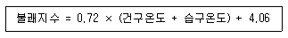
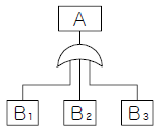
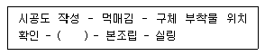

건설안전산업기사 (2007-03-04 기출문제)
1과목: 산업안전관리론
1. 근로시간 1000시간당 재해에 의해서 상실되는 근로 손실 일수를 뜻하고 있는 재해율은?
- 강도율
- 도수율
- 연천인율
- 종합재해지수
(정답률: 45%)

2. 재해 빈발자에 대한 분류 중 작업이 어렵거나 설비의 결함 때문에 발생되는 재해자는 다음 중 어느 유형에 해당되는가?
- 소질성 빈발자
- 상황성 빈발자
- 습관성 빈발자
- 미숙성 빈발자
(정답률: 64%)
3. 무재해운동을 추진하기 위한 3요소가 아닌 것은?
- 안전 활동의 라인화
- 직장(소집단)의 자주적인 활동의 활성화
- 전 종업원의 안전 요원화
- 최고경영자의 무재해, 무질병에 대한 확고한 경영자세
(정답률: 61%)
4. 매슬로우(Maslow)의 욕구 5단계 중 인간이 갖고자 하는 최고의 욕구는 어는 것인가?
- 자아실현의 욕구
- 사회적인 욕구
- 안전의 욕구
- 생리적인 욕구
(정답률: 67%)
5. 의식이 명확하고 사물을 적극적으로 받아들이려고 하는 상태의 의식단계(Phase)는?
- Phase Ⅰ
- PhaseⅡ
- Phase Ⅲ
- PhaseⅣ
(정답률: 60%)
6. 75명의 근로자가 공장에서 1일 8시간, 연간 320일을 작업하는 동안에 6건의 재해가 발생하였다면 이 공장의 도수율은 얼마인가?
- 17.65
- 26.04
- 31.25
- 33.33
(정답률: 56%)
7. 하베이(Harvey)의 안전 시정책 3E와 관계가 먼 것은?
- 시설 및 장비의 개선(Engineering)
- 교육 및 훈련(Education & Training)
- 경비절감(Economic)
- 감독철저(Enforcement)
(정답률: 81%)
8. 리더십의 권한 중 목표 달성을 위하여 부하 직원들이 상사를 존경하여 상사와 함께 일하고자 할 때 상사에게 부여되는 권한을 무엇이라 하는가?
- 보상적 권한
- 강압적 권한
- 합법적 권한
- 위임된 권한
(정답률: 64%)
9. 교육훈련기법 중 회사에 대한 일체감이나 대인관계를 교육내용으로 하는 것은?
- 기능에 관한 교육
- 지식에 관한 교육
- 태도에 관한 교육
- 환경에 관한 교육
(정답률: 64%)
10. Off.J.T(Off Job Training)의 특징이 아닌 것은?
- 전문가를 초빙하여 강사로 활용이 가능하다.
- 많은 지식, 경험을 교류할 수 있다.
- 다수의 근로자들에게 조직적 훈련이 가능하다.
- 직장의 실정에 맞게 실제적 훈련이 가능하다.
(정답률: 75%)
11. 어느 사업장의 재해도수율이 10.83이고 재해강도율이 7.92일 때 종합재해지수(FSI)는 얼마인가?
- 4.63
- 6.42
- 9.26
- 12.84
(정답률: 74%)
12. 다음 기업내 안전교육중 TWI의 훈련내용이 아닌 것은?
- 작업방법훈련(JMT)
- 작업지도훈련(JIT)
- 사례연구훈련(CST)
- 인간관계훈련(JRT)
(정답률: 56%)
13. 다음 중 방독 마스크의 사용을 금지하는 경우로 옳은 것은?
- 페인트를 제조할 때
- 소방작업을 할 때
- 갱내의 산소가 결핍되었을 때
- 이산화질소가 존재할 때
(정답률: 62%)
14. 다음 중 안전관리 조직으로 볼 수 없는 것은?
- 라인 조직
- 참모식 조직
- 수평 조직
- 라인⋅참모식 조직
(정답률: 70%)
15. 가죽제 안전화의 성능시험 항목에 해당되지 않는 것은?
- 내압박성
- 내충격성
- 내전압
- 박리저항
(정답률: 27%)
16. 산업안전표지에서 안내표지 중 세안장치의 기본모형 형태는?
- 사각형
- 원형
- 삼각형
- 마름모형
(정답률: 44%)
17. 부주의 발생현상 중 질병의 경우에 주로 나타나는 것은?
- 의식의 단절
- 의식의 우회
- 의식 수준의 저하
- 의식의 과잉
(정답률: 20%)
18. 재해발생의 배후 요인에는 4M이 있다. 이 가운데 작업정보⋅작업방법 등과 가장 관계가 깊은 것은?
- 관리(Management)
- 기계⋅설비(Machine)
- 인간(Man)
- 매체(Media)
(정답률: 36%)
19. 교육계획 작성시 가장 먼저 고려되어야 할 사항은?
- 교육대상
- 교육일정
- 교육장소
- 평가계획
(정답률: 81%)
20. 안전대의 종류는 사용구분에 따라 벨트식과 안전그네식으로 구분되는데 이 중 안전그네식에만 적용하는 것으로 나열한 것은?
- 1개 걸이용, U자 걸이용
- 1개 걸이용, 추락방지대
- U자 걸이용, 안전블록
- 추락방지대, 안전블록
(정답률: 24%)
2과목: 인간공학 및 시스템안전공학
21. 다음 중 골격(뼈)의 주요 기능이 아닌 것은?
- 신체를 지지하고 형상을 유지하는 역할
- 주요한 부분을 보호하는 역할
- 신체활동을 수행하는 역할
- 유기질을 저장하는 역할
(정답률: 75%)
22. 근골격계질환의 인간공학적 주요 위험요인이 아닌 것은?
- 부적절한 자세
- 다습한 환경
- 과도한 힘
- 단시간의 많은 반복
(정답률: 57%)
23. 일반적으로 인체에 가해지는 온⋅습도 및 기류 등의 외적변수를 종합적으로 평가하는 데에는 “불쾌지수”라는 지표가 이용된다. 식이 다음과 같은 경우 건구온도와 습도온도의 단위로 옳은 것은?

- 섭씨온도
- 화씨온도
- 절대온도
- 실효온도
(정답률: 62%)
24. 어떤 작업의 평균 에너지 값이 5kcal/min라고 했을 때 1시간 작업시 휴식시간은 약 몇 분이 필요한가? (단, 기초대사를 포함한 작업에 대한 평균에너지 값의 상한은 4kcal/min, 휴식시간에 대한 평균에너지 값은 1.5kcal/min이다.)
- 15
- 18
- 21
- 24
(정답률: 42%)
25. 인간-기계 체계의 기본 기능 중 내려진 의사결정의 결과로 발생하는 조작 행위를 일컫는 기능은?
- 정보감지 기능
- 정보보관 기능
- 정보처리 및 의사결정 기능
- 행동 기능
(정답률: 38%)
26. 다음 설명 중 틀린 것은?
- 인간의 실수는 우발적으로 재발하는 유형이다.
- 기계나 설비(hardware)의 고장조건은 저절로 복구되지 않는 것이다.
- 인간은 기계와 달리 학습에 의해 계속적으로 성능을 향상시킨다.
- 인간의 성능과 압박(stress)은 선형 관계를 가져 압박이 중간 정도일 때 성능수준이 가장 높다.
(정답률: 58%)
27. 60fL의 광도를 요하는 시각 표시장치의 반사율이 75%일 때 소요조명은 몇 fc인가?
- 75
- 80
- 85
- 90
(정답률: 43%)
28. 다음 FT도에서 사상 A가 발생할 확률은? (단. 각 사상의 발생할 확률은 B1은 0.1, B2는 0.2, B3는 0.3 으로 계산한다)

- 0.006
- 0.496
- 0.604
- 0.804
(정답률: 30%)
29. 기계의 통제를 위한 통제기기의 선택조건이 아닌 것은?
- 계기의 지침은 일치성이 있어야 한다.
- 식별이 어려운 통제기기를 선택해야 한다.
- 특정 목적에 사용되는 통제기기는 여러 개를 조합하여 사용하는 것이 좋다.
- 통제기기가 복잡하고 정밀한 조절이 필요한 때에는 멀티로테이션 컨트롤 기기를 사용하는 것이 좋다.
(정답률: 75%)
30. 인간에 대한 모니터링 방법 중 피로, 고통, 권태 등의 자각에 의해서 자신의 상태를 알고 행동하는 감시방법은?
- Self-monitoring 방법
- 생리학적 monitoring 방법
- Visual monitoring 방법
- 반응에 대한 monitoring 방법
(정답률: 59%)
31. 다음 중 결함수 분석기법(FTA)에 관한 설명으로 틀린 것은?
- 최초 Watson이 군용으로 고안하였다.
- 미니멀 패스(Minimal path sets)를 구하기 위해서는 미니멀 컷(Minimal cut sets)의 상대성을 이용한다.
- 정상사상의 발생확률을 구한 다음 FT를 작성한다.
- AND게이트의 확률 계산은 입력사상의 곱으로 한다.
(정답률: 35%)
32. 일반적으로 인체 계측 자료를 설계에 응용할 때의 내용으로 잘못된 것은?
- 선반 높이의 설계를 위하여 5%의 하위 백분위 수를 사용하였다.
- 조종 장치까지의 거리 설계를 위하여 5%의 하위 백분위 수를 사용하였다.
- 출입문의 설계를 위하여 5%의 하위 백분위 수를 사용하였다.
- 비상벨의 위치 설계를 위하여 5%의 하위 백분위 수를 사용하였다,
(정답률: 58%)
33. 수평작업대 설계에 있어서 최대작업역에 대한 설명으로 옳은 것은?
- 전완만으로 편하게 뻗어 파악할 수 있는 구역
- 전완과 상완을 곧게 펴서 파악할 수 있는 구역
- 상완만을 뻗어 파악할 수 있는 구역
- 사지를 최대한으로 움직여 파악할 수 있는 구역
(정답률: 53%)
34. FT(Fault Tree)도를 작성할 때 일반적으로 최하단에 사용되지 않는 사상은?
- 결함사상
- 통상사상
- 기본사상
- 생략사상
(정답률: 29%)
35. 안전표지에 사용되는 색채 중 “노랑”의 용도는?
- 지시
- 안내
- 경고
- 금지
(정답률: 58%)
36. 다음 중 통제비와 관련이 없는 것은?
- C/D비 라고도 한다.
- 최적통제비는 이동시간과 조정시간의 교차점이다.
- Maslow와 관련이 깊다.
- 통제기기와 시각표시 관계를 나타내는 비율이다.
(정답률: 46%)
37. 다음 중 인간 실수확률에 대한 추정기법이 아닌 것은?
- 계층분석모델
- 위급사건기법
- 직무 위급도 분석
- 조작자 행동나무
(정답률: 34%)
38. 검사공정의 작업자가 제품의 완성도에 대한 검사를 하고 있다. 어느 날 10000개의 제품에 대한 검사를 실시하여 200개의 부적합품(불량품)을 발견하였으나, 이 Lot 에는 실제로 500개의 부적합품(불량품)이 있었다. 이 때 인간과오 확률(Human Error Probability)은 얼마인가?
- 0.02
- 0.03
- 0.04
- 0.⑤
(정답률: 53%)
39. 다음 중 시스템(제품)의 고유신뢰도를 높이기 위하여 가장 중요한 것은?
- 설계 개선
- 작업자에 대한 교육
- 철저한 최종 검사
- 사용자에 대한 교육훈련
(정답률: 34%)
40. 어떤 물체나 표면에 도달하는 빛의 단위 면적당 밀도를 무엇이라 하는가?
- 광량
- 조도
- 광도
- 반사율
(정답률: 67%)
3과목: 건설시공학
41. 수직굴착, 수중굴착 등 일반적으로 협소한 장소의 깊은 굴착에 적합한 것으로 자갈 등의 적재에도 사용하는 토공장비는?
- 클램셸
- 드래그라인
- 파워쇼밸
- 드래그쇼밸
(정답률: 66%)
42. 형강 또는 판 등의 겹침이음, T자이음, 각이음 등에 쓰이며, 철판과 철판이 겹치거나 맞닿는 부분의 각을 이루는 부분을 용접하는 방식의 명칭은?
- 모살용접
- 맞댐용접
- 플레이용접
- 플래그용접
(정답률: 24%)
43. 트렌처와 같은 도랑파기에 가장 적합한 장비명은?
- 도저
- 립퍼
- 백호
- 로더
(정답률: 38%)
44. 다음 철골용접에 관한 용어 중 결함에 속하지 않는 것은?
- 언더 컷(under cut)
- 오버 랩(over lap)
- 블로우 홀(blow hole)
- 위핑(weeping)
(정답률: 80%)
45. 다음 항목 중 공사관리의 3대 목표로 옳은 것은?
- 품질관리, 공정관리, 물가관리
- 품질관리, 공정관리, 원가관리
- 품질관리, 원정관리, 안전관리
- 안전관리, 품질관리, 물가관리
(정답률: 57%)
46. 점토에서 분사현상(Quick sand)이 잘 일어나지 않는 이유로 가장 적합한 것은?
- 흙의 공극이 크기 때문
- 점토 입자의 비중이 크기 때문
- 입자가 너무 작기 때문
- 점착력이 있기 때문
(정답률: 47%)
47. 건설공사에서 램머(rammer)의 용도는?
- 철근절단
- 철근굴곡
- 잡석다짐
- 토사적재
(정답률: 77%)
48. 거푸집 측압에 영향을 주는 요인에 관한 설명 중 틀린 것은?
- 콘크리트 타설속도가 빠를수록 측압이 크다.
- 묽은 콘크리트일수록 측압이 크다.
- 철근량이 많을수록 측압이 크다.
- 단면이 클수록 측압이 크다.
(정답률: 53%)
49. 돌공사의 공사방법 중 건식공법의 장점이 아닌 것은?
- 동결, 백화현상이 없다.
- 고층건물에 유리하다.
- 겨울철공사가 가능하다.
- 구조체와 긴결이 쉽다.
(정답률: 38%)
50. 다음 커튼월 공사의 작업흐름 중 ( )에 가장 적합한 것은?

- 자재정리
- 가조립
- 패스너조임
- 선조임
(정답률: 75%)
51. 벤토나이트(Bentonite) 이수 등으로 굴착벽면의 붕괴를 방지하면서 지중에 벽체를 타설하는 공법은?
- 슬러리월공법
- 어스앵커공법
- 레이몬드파일공법
- 트렌치피트공법
(정답률: 30%)
52. 콘크리트 공사에서 골재중의 수량을 측정할 때 표면수는 없지만 내부는 포화상태로 함수되어 있는 골재의 상태를 무엇이라 하는가?
- 절건상태
- 표건상태
- 기건상태
- 습윤상태
(정답률: 72%)
53. 철골 세우기용 장비 중 수평이동이 용이하고 건물의 층수가 적은 긴 평면일 때 또는 당김줄을 마음대로 맬 수 없을 때 가장 유리한 장비는?
- 스티프레그데릭
- 진폴
- 가이데릭
- 트럭크레인
(정답률: 30%)
54. 건설의 전 과정에서 프로젝트를 보다 효율적이고 경제적으로 수행하기 위하여 각 부분의 전문가들로 구성하여 통합된 관리기술을 건축주에게 서비스하는 것을 무엇이라 하는가?
- CM
- EC
- QC
- JV
(정답률: 70%)
55. 경량콘크리트 시공상의 주의사항과 거리가 먼 것은?
- 철근의 이음길이를 보통콘크리트에 비하여 길게 하여야한다.
- 경량골재는 배합하기 전에 완전히 건조시켜야 한다.
- 보와 바닥판의 콘크리트는 벽이나 기둥의 콘크리트가 충분히 안정된 후에 부어 넣어야 한다.
- 직접 흙 또는 물에 항상 접하는 부분에는 경량콘크리트의 시공을 금해야 한다.
(정답률: 70%)
56. 블리딩(Bleeding)을 옳게 설명한 것은?
- 콘크리트가 굳어가는 현상
- 아직 굳지 않은 콘크리트의 이상 응결정도
- 양생 초기 단계에서 생기는 미세한 물질
- 현장 콘크리트 타설 중 수분이 상승하는 현상
(정답률: 41%)
57. 콘크리트 시공시 다짐에 대한 설명으로 옳지 않은 것은?
- 내부 진동기를 사용함을 원칙으로 한다.
- 슬럼프가 클수록 오래 다지도록 한다.
- 슬럼프가 작으면 공기량의 손실은 적다.
- 콘크리트 다짐시 철근에 진동을 주지 않는다.
(정답률: 34%)
58. 철근콘크리트공사에서 거푸집 조립순서로 옳은 것은?
- 기둥 - 벽 - 보 - 바닥판
- 벽 - 기둥 - 보 - 바닥판
- 기둥 - 보 - 벽 - 바닥판
- 기둥 - 벽 - 바닥판 - 보
(정답률: 35%)
59. 주로 연약한 점토질 지반에서 진흙의 점착력을 판별하는 토질시험은?
- 표준관입시험
- 지내력도시험
- 보링
- 베인테스트
(정답률: 60%)
60. 지반보다 높은 곳의 굴착에 적합한 토공기계는?
- 클램쉘
- 드래그라인
- 파워쇼밸
- 드래그쇼밸
(정답률: 66%)
4과목: 건설재료학
61. 목재 건조의 효과에 대한 설명 중 옳지 않은 것은?
- 약제 주입의 용이
- 도장성의 개선
- 목재 수축에 의한 손상 방지
- 못, 나사 부착력의 감소
(정답률: 53%)
62. 비철금속 중 아연에 대한 설명으로 틀린 것은?
- 청색을 띤 백색 금속이며, 비점이 비교적 낮다.
- 건조한 공기 중에서는 거의 산화하지 않는다.
- 인장강도나 연신율이 높기 때문에 가공성이 좋다.
- 산, 알칼리 등은 아연의 부식을 촉진한다.
(정답률: 32%)
63. 다음 중 각종 시멘트의 조기강도가 큰 것으로부터 순서가 옳게 배열된 것은?
- 보통포틀랜드시멘트 - 중용열포틀랜드시멘트 - 알루미나시멘트
- 알루미나시멘트 - 중용열포틀랜드시멘트 - 보통포틀드시멘트
- 중용열포틀랜드시멘트 - 알루미나시멘트 - 보통포틀드시멘트
- 알루미나시멘트 - 보통포틀랜드시멘트 - 중용열포틀랜드시멘트
(정답률: 48%)
64. 목재에 대한 설명으로 옳지 않은 것은?
- 가공성이 좋다.
- 열전도율이 매우 작다.
- 함수율 변화에 의한 신축률이 매우 크다.
- 비강도(강도/비중)가 매우 작다.
(정답률: 54%)
65. 퍼티, 코킹, 실런트 등의 총칭으로서 건축물의 프리패브공법, 커튼월 공법 등의 공장 생산화가 추진되면서 주목받기 시작한 재료는?
- 아스팔트재
- 실재
- 실리콘재
- FRP 보강재
(정답률: 37%)
66. 목재의 함수율에 관한 설명 중 틀린 것은?
- 목재의 함유수분 중 자유수는 목재의 중량에는 영향을 끼치지만 목재의 물리적 또는 기계적 성질과는 관계가 없다.
- 침엽수의 경우 심재의 함수율은 항상 변재의 함수율 보다 크다.
- 섬유포화상태의 함수율은 30% 정도이다.
- 기건상태란 목재가 통상 대기의 온도, 습도와 평형된 수분을 함유한 상태를 말하며, 이때의 함수율은 15% 정도이다.
(정답률: 69%)
67. 다음의 시멘트에 관한 설명 중 옳지 않은 것은?
- 포틀랜드시멘트는 수화반응의 진행과 동시에 열을 발산 한다.
- 시멘트의 안전성 측정은 오토클레이브 팽창도 시험 방법으로 행한다.
- 응결시간은 신선한 시멘트로서 분말도가 미세한 것일수록 짧아진다.
- 시멘트의 비중은 소성온도나 성분에 따라 다르며, 동일 시멘트인 경우에 풍화한 것일수록 커진다.
(정답률: 43%)
68. 다음의 알루미늄에 관한 설명 중 옳지 않은 것은?
- 비중이 철의 1/3 정도로 경량이다.
- Al-Cu계 합금은 내열성과 강도는 나쁘나 내식성이 좋다.
- 상온에서 판, 선으로 압연가공하면 경도와 인장강도가 증가한다.
- 열⋅전기 전도성이 크고 반사율이 높다.
(정답률: 52%)
69. 다음의 석재에 대한 설명 중 옳지 않은 것은?
- 대리석은 강도는 높지만 내화성이 낮고 풍화되기 쉽다.
- 현무암은 내화성은 좋으나 가공이 어려우므로 부순돌로 많이 사용된다.
- 트래버틴은 화성암의 일종으로 실내장식에 쓰인다.
- 점판암은 얇은 판 채취가 용이하여 지붕재료로 사용된다.
(정답률: 36%)
70. 시멘트의 주요 조성화합물 중에서 재령 28일 이후 시멘트수화물의 강도를 지배하는 것은?
- 규산제3칼슘
- 규산제2칼슘
- 알루민산제3칼슘
- 알루민산철제4칼슘
(정답률: 33%)
71. 돌로마이트 플라스터에 대한 설명으로 옳은 것은?
- 소석회에 비해 점성이 낮고, 작업성이 좋지 않다.
- 여물을 혼합하여도 건조수축이 크기 때문에 수축 균열을 발생하는 결점이 있다.
- 회반죽에 비해 조기강도 및 최종강도가 작다.
- 물과 반응하여 경화하는 수경성 재료이다.
(정답률: 26%)
72. 점토 제품의 특징 중 SK 와 관련이 깊은 것은?
- 강도
- 흡수율
- 소성온도
- 시유도
(정답률: 71%)
73. 화강석의 용도로 적합하지 않은 것은?
- 견고하고 대형재가 생산되므로 구조재로 쓴다.
- 도로포장용 자갈에 쓰이며 시멘트, 석회의 주원료로 사용된다.
- 바탕색과 반점이 미려하므로 내, 외장재로 쓰인다.
- 콘크리트의 골재로 쓰인다.
(정답률: 27%)
74. 마그네시아시멘트모르타르에 탄성재인 코르크분말, 안료 등을 혼합한 것으로 바닥재료로 이용되는 것은?
- 리그노이드
- 리놀륨
- 연성모르타르
- 돌로마이트플라스터
(정답률: 20%)
75. 다음의 골재에 관한 설명 중 틀린 것은?
- 골재의 실적률은 용기에 골재를 채웠을 때 용기의 용적을 그 골재의 절대용적으로 나눈 값을 백분율로 표시한 것이다.
- 일반적으로 입형과 입도가 좋은 골재는 실적률이 크고 동일 슬럼프를 얻기 위한 단위 수량이 적다.
- 골재의 비중이라고 하는 것은 실제 비중이 아니라 내부의 미세한 금과 표면이 가늘게 패인 것을 포함한 상태의 비중을 말한다.
- 부순돌은 실적률이 작고 콘크리트에 사용될 때 워커 빌리티가 떨어진다.
(정답률: 20%)
76. 고온으로 가열하여 소정의 시간동안 유지한 후에 냉수, 온수 또는 기름에 담가 냉각하는 처리로 강도 및 경도, 내마모성의 증진을 목적으로 실시하는 강의 열처리법은?
- 불림(Normalizing)
- 풀림(Annealing)
- 담금질(Quenching)
- 뜨임(Tempering)
(정답률: 70%)
77. 다음의 점토제품 중 흡수율이 가장 적은 것은?
- 토기
- 도기
- 석기
- 자기
(정답률: 71%)
78. 솔, 롤러 등으로 용이하게 도포할 수 있도록 아스팔트를 휘발성 용제에 용해한 비교적 저점도의 액체로써 방수시공의 첫째 공정에 쓰는 바탕처리재는?
- 아스팔트 컴파운드
- 아스팔트 루핑
- 아스팔트 펠트
- 아스팔트 프라이머
(정답률: 62%)
79. 플라스틱 건설재료의 일반적 성질에 대한 설명 중 옳지 않은 것은?
- 상호간 계면 접착이 잘되며, 금속, 콘크리트, 목재, 유리 등 다른 재료에도 잘 부착된다.
- 열에 의한 팽창 및 수축이 크며, 각종 변화가 다양 하다.
- 내수성 및 내투습성은 플리초산비닐 등 일부를 제외하고는 극히 양호하다.
- 투명성이 필요한 용도에는 사용할 수 없다.
(정답률: 56%)
80. KS에 규정된 콘크리트용 부순굵은골재와 부순잔골재의 품질 중 흡수율의 기준은?
- 1% 이하
- 3% 이하
- 5% 이하
- 10 이하
(정답률: 72%)
5과목: 건설안전기술
81. 안전보건관리책임자를 두어야 할 건설업(공사)의 규모와 고용노동부장관에게 이를 증명할 수 있는 서류 제출시기에 대한 기준으로 옳은 것은?
- 총공사금액 2억원 이상, 선임한 날로부터 7일 이내
- 총공사금액 2억원 이상, 선임한 날로부터 14일 이내
- 총공사금액 20억원 이상, 선임한 날로부터 7일 이내
- 총공사금액 20억원 이상, 선임한 날로부터 14일 이내
(정답률: 32%)
82. 안전난간의 구조 및 설치요건에 대한 기준으로 틀린 것은?
- 상부난간대는 경사로의 표면으로부터 90센티미터이상 120센티미터 이하에 설치한다.
- 발끝막이판은 바닥면으로부터 10센티미터 이상의 높이를 유지한다.
- 난간대는 지름 2센티미터 이상의 금속제파이프나 그 이상의 강도를 가진 재료로 한다.
- 안전난간은 임의의 점에서 임의의 방향으로 움직이는 100킬로그램의 이상의 하중을 견딜 수 있는 구조로한다.
(정답률: 39%)
83. 수직갱에 가설된 통로의 길이가 15m 이상인 때에는 매10m마다 무엇을 설치해야 하는가?
- 손잡이
- 계단참
- 클램프
- 미끄럼방지 조치
(정답률: 60%)
84. 다음 중 붕괴사고의 직접적인 방지대책과 가장 거리가 먼 것은?
- 우수(雨水), 지하수 등의 사전배제
- 가스분출 검사
- 안전경사 유지
- 토사유출 방지
(정답률: 65%)
85. 다음 중 버팀대(Strut)의 변형을 측정하는 계측기는?
- 경사계(Inclino meter)
- 수위계(water level meter)
- 침하계(Extension)
- 하중계(Load cell)
(정답률: 37%)
86. 다음의 승강장치 중 데릭의 종류에 속하지 않는 것은?
- 가이 데릭
- 케이블 데릭
- 진폴 데릭
- 삼각 데릭
(정답률: 23%)
87. 쇼벨계 굴착기계에 속하지 않는 것은?
- 파워쇼벨(power shovel)
- 크램셀(clamshell)
- 스크레이퍼(scraper)
- 드래그라인(dragline)
(정답률: 65%)
88. 거푸집동바리 조립도에 명시해야 할 사항과 가장 거리가 먼 것은?
- 부재의 재질
- 단면규격
- 설치간격
- 작업 환경 조건
(정답률: 79%)
89. 사업주가 추락에 의하여 근로자에게 위험을 미칠 우려가 있을 때 비계를 조립하는 등의 방법에 의하여 작업발판을 설치하여 추락방지 조치를 해야 할 최소 높이는?
- 2 m
- 3 m
- 4 m
- 5 m
(정답률: 60%)
90. 추락에 의한 위험방지 조치사항으로 거리가 먼 것은?
- 투하설비 설치
- 작업발판 설치
- 추락방지망 설치
- 근로자에게 안전대 착용
(정답률: 63%)
91. 유해⋅위험 방지 계획서를 작성하는 자격 요건에 해당 되지 않는 것은?
- 건설안전분야 산업안전지도사
- 건설안전기술사
- 건선안전산업기사 이상으로서 실무경력 7년인 자
- 건설안전기사로서 실무경력 4년인 자
(정답률: 37%)
92. 철골작업시 작업의 제한 기준으로 옳은 것은?
- 풍속이 초당 10미터 이상인 경우
- 풍속이 초당 30미터 이상인 경우
- 강설량이 분당 1밀리미터 이상의 경우
- 강설량이 분당 1센티미터 이상의 경우
(정답률: 67%)
93. 건설업 산업안전보건관리비 사용내역에 해당 되지 않는 것은?
- 안전관리자의 인건비
- 추락방지용 안전시설비
- 각종 개인보호구의 구입, 수리, 관리 등에 소요되는 비용
- 안전담당자 업무수당 외의 인건비
(정답률: 46%)
94. 단면이 20cm×20cm, 길이가 7m 인 기둥에 10ton의 압축력이 축방향으로 작용할 때 압축응력은?
- 320 ton/m2
- 250 ton/m2
- 200 ton/m2
- 100 ton/m2
(정답률: 45%)
95. 강관틀 비계 조립시 높이가 최소 몇 m를 초과하는 경우에 주틀간의 간격을 1.8m 이하로 하여야 하는가?
- 15m
- 20m
- 25m
- 30m
(정답률: 56%)
96. 해체 작업용 화약류에 속하지 않는 것은?
- 저폭속 파쇄약
- 저폭속 폭약
- 팽창제
- 다이나마이트
(정답률: 75%)
97. 거푸집동바리 등을 조립할 때 강재와 강재의 접속부 또 는 교차부를 연결시키기 위한 전용철물은?
- 가재
- 섀클
- 클램프
- 장선
(정답률: 57%)
98. 다음 터널 공법 중 전단면 기계 굴착에 의한 공법에 속하는 것은?
- ASSM(American Steel Supported Method)
- NATM(New Austrian Tunneling Method)
- TBM(Tunnel Boring Machine)
- 개착식 공법
(정답률: 46%)
99. 거푸집에 작용하는 하중 중에서 연직하중이 아닌 것은?
- 거푸집의 자중
- 작업원의 작업하중
- 가설설비의 충격하중
- 콘크리트의 측압
(정답률: 48%)
100. 구조물 작업에서의 위험요인과 재해형태가 가장 관련이 적은 것은?
- 자재적재 및 통로 미확보-----------전도
- 개구부 안전난간 미설치------------추락
- 벽돌 등 중량물 취급 작업-----------협착
- 항만 하역 작업-------------------질식
(정답률: 67%)